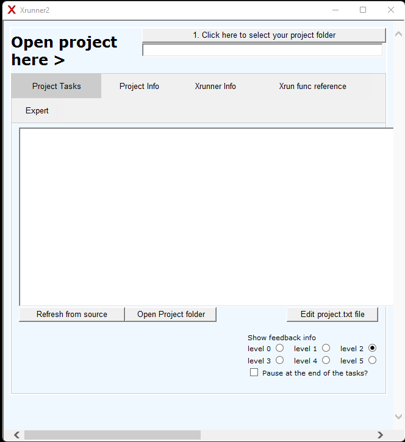

Xrunner2 is a GUI to run projects that would be batch files, that may be simple transformations or complex projects. It is designed to have simpler and more consistent syntax than batch files and command line tools.
:funcname inputfile outputfile parameters
When it open it looks like this when no project is loaded. 
While is was originally created to run XSLT trnasformation using Saxon, it can also run any command line tool. Xrunner2 only prepares for XSLT transformations when needed, thus making it faster to startup. Inspired by Vimod-Pub but simpler to setup.
A key feature is it can run multiple tasks in each group for tasks. While in a batch file you have to specify the input and output of each command line tool. Xrunner2 only requires you to specify the first input. It is recommended you specify the last output. See the example below.
[b]
b=Press this button to run this set of tasks
t=:inputfile "%sourcexml%"
t=:xslt transfom.xslt
t=:cct changetable.cct
t=:outputfile "%outxml%" start
Xrunner2 differes from Xrunner in that it is much faster to start. The original Xrunner always built a project.xslt file, even if no XSLT transformation was needed. Now Xrunner2 only builds a project.xslt if that file is needed and is either missing or out of date. It uses a Makefile to do this quickly.
Xrunner2 is all scripts. It can be modified at many points. The GUI HTA file is basically a HTML file with CSS, some Javascript and mostly VBScript. The xrunner.cmd file is just a small collection of batch file functions that does the setup, command and control and then runs func.cmd. The majority of the content is in the func.cmd file that is a library of functions. More functions can be added to that if you need them. Just follow the pattern in ones like :cct.
When you click a button on Xrunner2 GUI it runs xrunner.cmd with a number of parameters. 1. The location of the project.txt file. 2. The button that was pressed. One of a-z. 3. The informatin feed back level. The default is 2. Higher levels give more debugging information. 4. The last option pause causes the command window to pause otherwise a countdown of 30 secondes is started that will close the window.
Xrunner2 allows you to have serial tasks run, without the need to specify the input and output file names. That is handled for you. You can just reorder two tasks without needing to update the input and output files. See the Examples section.
All the variable and tasks and groups of tasks are contained in one project.txt file. Other variables for use in XSLT trnasformation can be stored in the lists.tsv file or key value pairs stored in the keyvalue.tsv file.
The project.txt file is an INI like file. The variabels are kept in the [variables] section. This is a variable name followed by = followed by the value.
sourcexml=%projectpath%\source\data.xml
One key variable does not need to be created and that is %projectpath%. It is created for you. You do not need double quotes on the variable values. Do not have spaces before or after the = sign unless intended.
As an example running a XSLT2 transformation with Java and the Saxon JAR file looks like this:
%java% -jar "%saxon%" -o:"%outfile%" "%infile%" "%script%" %params%
But in Xrunner it looks like this:
t=:xslt %script% "%infile%" "%outfile%" %params%
But it can be even simplier if the input file is the output of the last task:
t=:xslt %script%
The input as taken from the previous tasks output and the new output file is named based on the script and the sequence of the task. The advantiage of this system is that tasks can be quickly rearranged in the order without the need to change the input and output file.
[variables] section.[variables]
title=This is the title that show on the top of Xrunner
sourcexml=%projectpath%\source\data.xml
outxml=%projectpath%\output\new-data.xml
[a]: and the task type i.e. xslt scripts folder of the project.[a]
button=Press this button to run this set of tasks
t=:xslt transfom.xslt "%sourcexml%"
t=:cct changetable.cct "" "%outxml%"
or it can be written
[b]
button=Press this button to run this set of tasks
t=:inputfile "%sourcexml%"
t=:xslt transfom.xslt
t=:cct changetable.cct
t=:outputfile "%outxml%" start
[a], looking at the line: t=:xslt transfom.xslt "%sourcexml%" this has no output file specified because the file naming will happen automatically. In the second t=:cct changetable.cct "" "%outxml%" the empty double quotes use the output from the previous task.[b] demonstrates how you can just specify the start and end file and have the file passed to the next task without worrying about the naming. The output file can also be started by the relevant associated program by adding start as the second parameter.a-z.a-z single letters [subtask]. This is handy when running a loop and passing a file to the same set of tasks.[c]
b=rename files
t=:loopfiles renamefile "%projectpath%\source\*.sfm"
[renamefile]
t=:name "%~1"
t=:cmd "ren '%~1' '%name%.newext'" "" "%projectpath%\source"
[renamefile].[renamefile] group, first we get the filename with out the extension.%~1 to its name and the new extension.%~1 then it will look where Xrunner2 is installed.